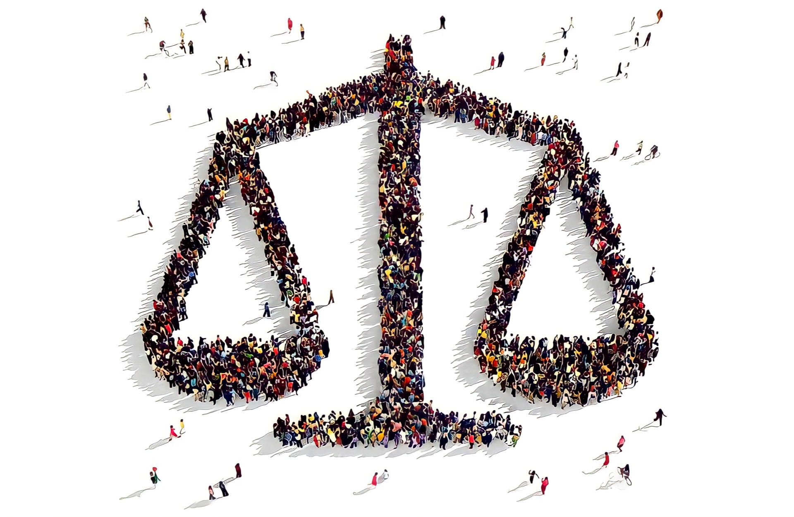

კულტურული მრავალფეროვნება და უმცირესობების უფლებები თანამედროვე მსოფლიოს მნიშვნელოვანი საკითხებია. ეს თემები მჭიდროდ უკავშირდება სამართლიანობის, თანასწორობისა და ადამიანის უფლებების ფუნდამენტურ პრინციპებს. კულტურული მრავალფეროვნება გულისხმობს საზოგადოებაში სხვადასხვა კულტურული, ეთნიკური, რელიგიური და ლინგვისტური ჯგუფების თანაარსებობას. ეს მრავალფეროვნება ხშირად განიხილება როგორც სიმდიდრე, რომელიც ამდიდრებს საზოგადოებას ახალი იდეებით, პერსპექტივებითა და ტრადიციებით. UNESCO-ს მიხედვით, კულტურული მრავალფეროვნება წარმოადგენს კაცობრიობის საერთო მემკვიდრეობას და უნდა იყოს აღიარებული და განმტკიცებული ყველა თაობის სასარგებლოდ. თუმცა, კულტურული მრავალფეროვნების არსებობა ავტომატურად არ ნიშნავს უმცირესობების უფლებების სრულ დაცვას. უმცირესობების უფლებები მოიცავს იმ ჯგუფების დაცვას, რომლებიც რიცხობრივად ნაკლებნი არიან დომინანტ პოპულაციასთან შედარებით და ხშირად განსხვავდებიან ეთნიკური, რელიგიური ან ლინგვისტური ნიშნით. უმცირესობების უფლებების დაცვა მოიცავს რამდენიმე მნიშვნელოვან ასპექტს: დისკრიმინაციის აკრძალვა: უმცირესობების წევრებს უნდა ჰქონდეთ თანაბარი უფლებები და შესაძლებლობები საზოგადოებრივი ცხოვრების ყველა სფეროში. კულტურის შენარჩუნება: უმცირესობებს უნდა ჰქონდეთ უფლება შეინარჩუნონ და განავითარონ საკუთარი კულტურა, ტრადიციები და ენა. განათლება: უმცირესობებს უნდა ჰქონდეთ წვდომა განათლებაზე, მათ შორის მშობლიურ ენაზე. პოლიტიკური მონაწილეობა: უმცირესობებს უნდა ჰქონდეთ შესაძლებლობა მონაწილეობა მიიღონ გადაწყვეტილების მიღების პროცესებში. რელიგიური თავისუფლება: უმცირესობებს უნდა ჰქონდეთ უფლება თავისუფლად აღიარონ და პრაქტიკაში გამოიყენონ საკუთარი რელიგია. მიუხედავად საერთაშორისო კონვენციებისა და ეროვნული კანონმდებლობებისა, უმცირესობების უფლებების დაცვა კვლავ რჩება გამოწვევად მრავალ ქვეყანაში. ხშირია დისკრიმინაციის, მარგინალიზაციისა და სოციალური გარიყვის შემთხვევები. კულტურული მრავალფეროვნებისა და უმცირესობების უფლებების დაცვა მოითხოვს კომპლექსურ მიდგომას: საკანონმდებლო ჩარჩოს გაძლიერება: კანონები, რომლებიც კრძალავს დისკრიმინაციას და იცავს უმცირესობების უფლებებს. განათლება და ცნობიერების ამაღლება: საზოგადოების ინფორმირება კულტურული მრავალფეროვნების მნიშვნელობისა და უმცირესობების უფლებების შესახებ. ინკლუზიური პოლიტიკა: უმცირესობების ჩართვა გადაწყვეტილების მიღების პროცესებში. კულტურათაშორისი დიალოგი: სხვადასხვა კულტურულ ჯგუფებს შორის ურთიერთგაგების ხელშეწყობა. ეკონომიკური ინტეგრაცია: უმცირესობების ეკონომიკური შესაძლებლობების გაზრდა. დასკვნის სახით შეიძლება ითქვას, რომ კულტურული მრავალფეროვნებისა და უმცირესობების უფლებების პატივისცემა და დაცვა არის არა მხოლოდ ეთიკური იმპერატივი, არამედ აუცილებელი პირობა მშვიდობიანი, სტაბილური და მდგრადი საზოგადოების შესაქმნელად. ეს მოითხოვს მუდმივ ძალისხმევას როგორც სახელმწიფოების, ისე საერთაშორისო საზოგადოების მხრიდან.
ასევე შეიძლება დაგაინტერესოთ

10.10.23
სამოქალაქო თავისუფლებები პანდემიის პირობებში

29.03.24
რელიგიური უმცირესობების თავისუფლება საქართველოში

30.10.20
შეზღუდული შესაძლებლობის მქონე პირთა უფლებები